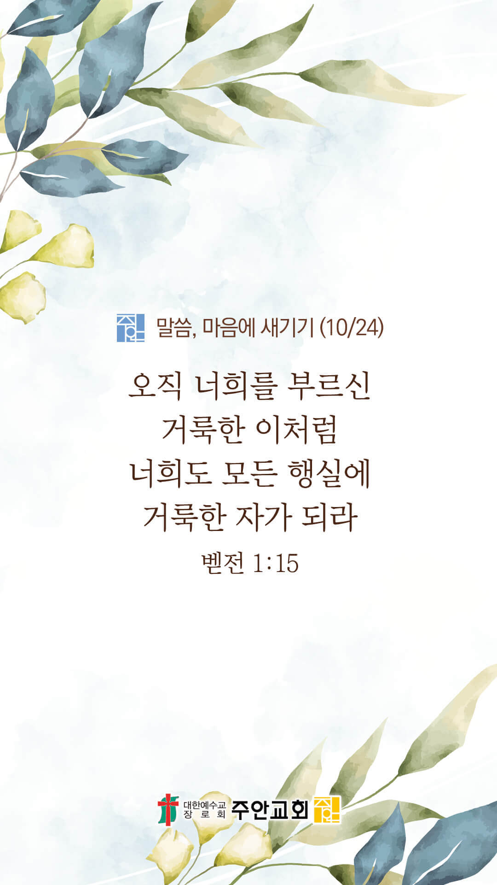

기도실 안내
2021년 10월 24일 (주일)
- 온라인 기도실은 온 회중이 함께 주님 앞으로 나아가는 자리입니다
- 30분 정도 여유를 가지고 하시기 바랍니다
- 말씀과 묵상, 찬양과 기도로 나아갑니다
- 배경 음악이 나올 수 있습니다 볼륨을 조절해주세요
준비가 되셨으면 아래의 버튼을 눌러주세요
할렐루야
내 영혼아 여호와를 찬양하라
시 146:1
- 가사를 묵상하며 읽습니다
예수 나를 위하여 십자가를 질 때
세상 죄를 지시고 고초 당하셨네
십자가를 지심은 무슨 죄가 있나
저 무지한 사람들 메시야 죽였네
피와 같이 붉은 죄 없는 이가 없네
십자가의 공로로 눈과 같이 되네
할렐루야
내 영혼아 여호와를 찬양하라
시 146:1
- 가사를 묵상하며 읽습니다
아름답다 예수여 나의 좋은 친구
예수 공로 아니면 영원 형벌 받네
예수여 예수여 나의 죄 위하여
보배 피를 흘리니
죄인 받으소서 아멘
할렐루야
내 영혼아 여호와를 찬양하라
시 146:1
예수 나를 위하여 by 비컴퍼니
위의 찬양이 끝나면 말씀읽기를 눌러주시면 됩니다
주의 말씀은 내 발에 등이요
내 길에 빛이니이다 (시119:105)
오늘의 말씀입니다
음악 소리가 크면 조절하시기 바랍니다

마음의 묵상
벧전 1:15
“오직 너희를 부르신 거룩한 이처럼 너희도 모든 행실에 거룩한 자가 되라”
1. 우리를 부르신 하나님이 어떤 분이라고 말씀하나요?
2. 죄 많고 연약한 우리가 어떻게 거룩한 사람이 될 수 있을까요?
3. 거룩하신 하나님을 아직도 모르는 가족들과 지인들(VIP)을 위해 간절히 기도합시다
주님처럼 거룩한 자 되게 하소서
회개, 삶의 방향을 바꾸는 결정
하나님의 나라가 우선이 되게 하소서
“이르시되 죽은 자들로
자기의 죽은 자들을 장사하게 하고
너는 가서 하나님의 나라를 전파하라 하시고”
- 누가복음 9:60 -
3분 정도 회개하며 주님 앞에 나아갑니다
사슴이 시냇물을 찾기에 갈급함 같이
시 42:1
- 다음의 말씀을 소리 내어 읽습니다
[마가복음 16장 15-18절]
15 또 이르시되 너희는 온 천하에 다니며 만민에게 복음을 전파하라
16 믿고 세례를 받는 사람은 구원을 얻을 것이요 믿지 않는 사람은 정죄를 받으리라
17 믿는 자들에게는 이런 표적이 따르리니 곧 그들이 내 이름으로 귀신을 쫓아내며 새 방언을 말하며
18 뱀을 집어올리며 무슨 독을 마실지라도 해를 받지 아니하며 병든 사람에게 손을 얹은즉 나으리라 하시더라
나라와민족을 위한 복음
1. 나라와 민족을 복음으로 변화시켜주소서
능력의 하나님,
이 땅의 모든 우상들과 이단들을 예수 그리스도의 권세로 떠나가게 하시고, 이 나라가 하나님의 마음에 합한 나라,
하나님을 기쁘시게 하는 민족이 되게 하소서.
간절한 마음으로 3분 정도 기도합시다
주안교회의 사명
2. 주안교회가 영혼구원의 사명을 끝까지 감당하게 하소서
사랑의 주님,
주안교회를 위해 세우신 위임목사님을 성령으로 충만케 하시고, 주안의 모든 성도들이 말씀과 기도에 깨어 있게 하소서.
그리하여 주안교회가 세상의 빛과 소금이 되어 수많은 영혼들을 주께로 돌아오게 하는 이 시대의 영적 방주가 되게 하옵소서.
간절한 마음으로 3분 정도 기도합시다
주님의 주관하심
3. 올라인 예수사랑큰잔치를 친히 주관하여 주소서
전능하신 하나님,
올라인 예수사랑큰잔치를 주님의 능력의 손으로 붙들어 주시고 주께서 친히 이끌어 주옵소서. 천국잔치를 방해하는 모든 악한 세력들을
결박하여 주시고, 단순히 사람을 데려오는 행사가 아니라 영적 전쟁에서 승리하는 천국잔치가 되게 하옵소서.
간절한 마음으로 3분 정도 기도합시다
주님의 인도하심
4. 올라인 예수사랑큰잔치의 과정과 결과를 지켜주소서
저희를 도우시는 하나님,
저희가 작정한 영혼들(VIP)이 구원의 소식을 잘 듣게 하시고, 그들의 마음의 문을 열어 주소서. 우둔한 저희의 입술과 노력이지만 복음 전파의 유용한 도구가 되게 하시고,
각종 방법으로 복음의 메시지를 전할 때 모든 소통들이 원활하게 하소서. 성령님께서 모든 관계들 속에 친히 교통하시고 역사하여 주옵소서.
간절한 마음으로 3분 정도 기도합시다
말씀에 순종
5. 저희가 말씀에 순종하게 하소서
하나님 아버지,
우리 주안의 모든 성도들이 겨자씨와 같은 존재임을 잊지 않게 하시고, 우리가 전하는 생명의 복음을 통해 삶을 포기하려는 많은 사람들이 주님 앞으로 돌아오는 구원의 역사가 이루어지게 하옵소서.
그리고 우리 주안교회를 축복의 통로로 사용하사 이 땅에 하나님의 나라가 놀랍게 확장되게 역사하옵소서.
간절한 마음으로 3분 정도 기도합시다
감사의 기도
- 오늘 기도를 인도하신 주님께 감사를 올려드립니다
- 아래의 구절을 읽고 주님께 감사의 마음을 올려드립시다
“두려워하지 말라
내가 너와 함께 함이라
놀라지 말라 나는 네 하나님이 됨이라
내가 너를 굳세게 하리라
참으로 너를 도와 주리라
참으로 나의 의로운 오른손으로
너를 붙들리라”
- 이사야 41장 10절 -
고요한 가운데 잠시 침묵하시기 바랍니다
파송, 세상을 향하여
- 오늘의 온라인 기도를 마쳤습니다
기도를 들으신 주님께서 평안히 가라 하십니다
주님께서 우리와 함께 하시니 두려울 것이 없습니다
새벽을 깨우며
- 새벽기도회 안내입니다